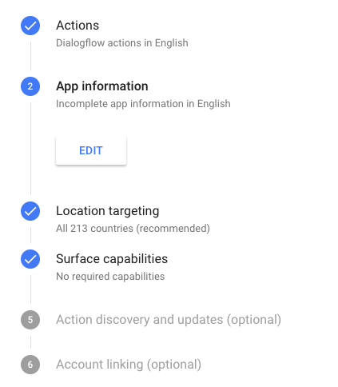
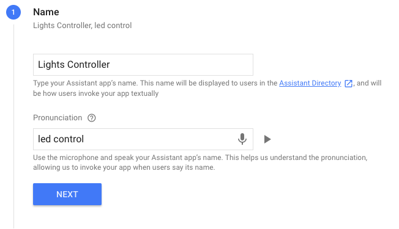
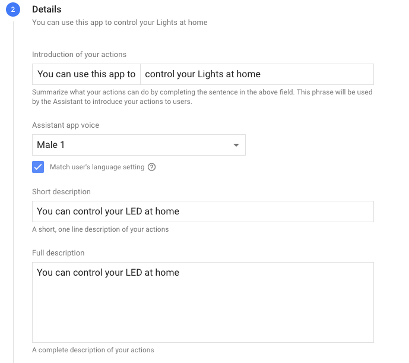
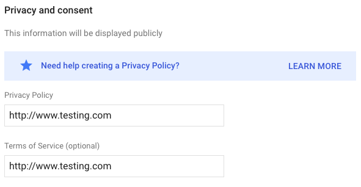
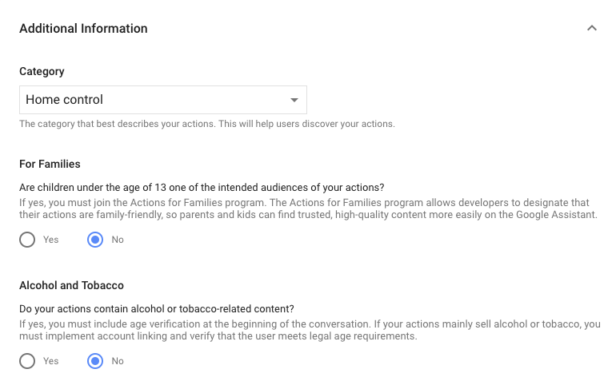
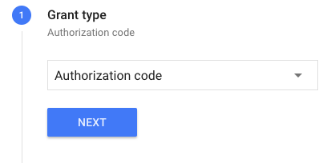
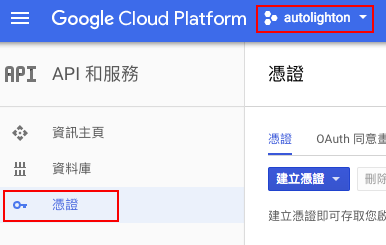
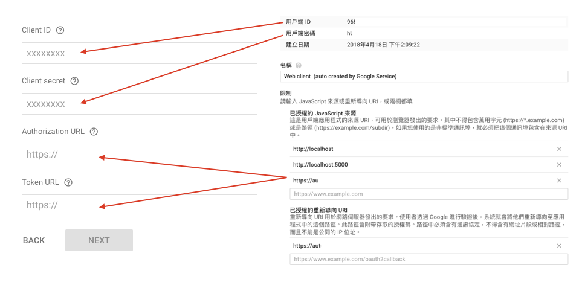

上一篇完成了第一步驟，接下來全部的工作都會在 Action on Google，回到 Overview 應該可以看到 Actions 已經打勾了，接下來就直接第二步吧

App infomation
Name
點擊 Edit，輸入 Assistant 名稱，這個名稱關於之後如何讓 Assistant 連接到 App，例如我的就需輸入 Talk to Lights Controller 或者 Talk to led control

填完這步儲存後，其實就可以打開手機上的 Google Assistant 做測試了！
Details
Introduction of your actions ， 說明這個 App 可以用來幹嘛，Assistant app voice 總共有四種聲音可以選擇，當 Assistant 連到 App 聲音會變成你所選擇的， Short description 和 Full description 就簡單描述一下

Images
這個步驟個人覺得挺麻煩的，你必須上傳兩張照片，解析度分別為 1920 x 1080 及 192 x 192 用於連到 App 顯示。
Contact details
這步驟是要填寫作者資訊，在Developer name 輸入你的名字， Email 就輸入信箱。
Privacy and consent
這個步驟為隱私權政策，如果只是測試可以先填入以下

Additional Information
選完 Home control 之後，按最下面的 Save ， 第二步驟就完成了。

Add account linking
其他的步驟其實都可以不用設定，剩下只需要填入帳號連接
Grant type
選擇 AUthorization code , 點 NEXT 下一步

Client information
這個步驟我有點不確定，因為邏輯上整個應用都是環繞在 Google ，應該也不用 OAuth ，但是這個選項又一定要輸入，所以我只好填入 Google API Console 裡的資訊。
選取專案，在左側選單點擊憑證，找到 OAuth 2.0 用戶端 ID 裡的 Web client (auto created by Google Service)

填入

Testing instructions
這個是要填入相關測試帳號跟密碼的，隨便輸入就行了,點擊 SUBMIT DRAFT FOR REVIEW。
Simulator
選單左側找到 Simulator ，輸入 Talk to … ，在網頁上測試 App 跑的情形，但是實際應用太不切實際了，不過台灣 Google Assistant 還沒開放下載，如果是使用 iPhone ，可以切換帳號地區 換到美國去下載，載完後再回覆成台灣，這樣手機裡面就有 Google Assistant 了，操作模式也跟模擬器上一樣
總結
經過四篇的洗禮，終於完成了，這邊有個小小的使用心得感想跟大家分享。第一點，語音辨識不是很精準，可能是我發音不標準，又加上沒有中文的選擇，所以可能只是為了開燈，卻花了很多時間在重複說指令。第二點，運作速度有待加強，當然這也有我家網路環境因素存在，但是有些時候 Assistant 可以馬上地作出反應，有時候指令正確，反應卻慢半拍。第三點，開發階段新功能不斷釋出，可能當你做好一陣子，會突然無法使用了，又或者當你想新增功能卻發現頁面完全不一樣，完全沒辦法下手。不過還是可以期待語音控制的發展，Google 提供那麼多資源給開發者使用，卻沒收費，就算是流量限制一般人是很難觸發的，當家電產品越來越往 Google 靠攏，那發展就指日可待。
重點：
1.語音辨識不精準，沒中文
2.運作速度及穩定有待加強
3.尚未成熟，官方不斷更新